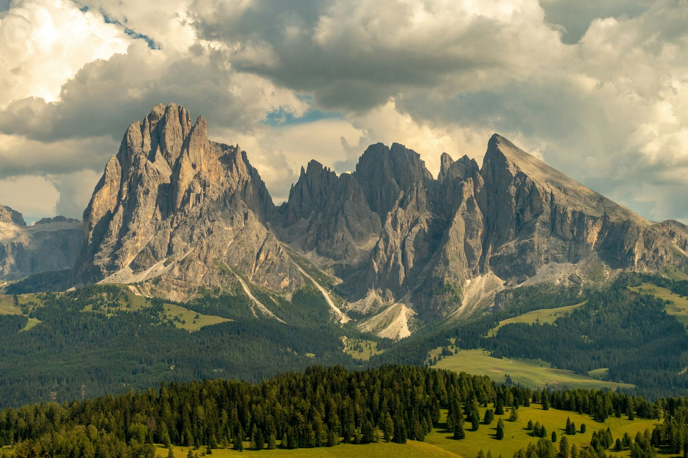

Discover the wonders of the Dolomites! Explore breathtaking landscapes, outdoor activities, and a rich Alpine culture.
Le Dolomiti, meraviglie naturali uniche al mondo, sono una catena montuosa situata nelle Alpi Orientali italiane, nel nord-est dell’Italia.
Questo spettacolare patrimonio dell'UNESCO si estende per oltre 200 chilometri, offrendo scenari spettacolari che lasciano senza fiato. Le vette dolomitiche, con la loro caratteristica roccia calcarea che assume tonalità rosate al tramonto, rappresentano un vero paradiso per gli amanti della natura e degli sport all'aria aperta.

Escursionisti, alpinisti, sciatori e ciclisti trovano qui un ambiente ideale per praticare le loro passioni, circondati da paesaggi mozzafiato e una ricca flora e fauna. Le Dolomiti non sono solo bellezze naturali, ma offrono anche una ricca cultura e storia, con antichi villaggi alpini, castelli medievali e tradizioni enogastronomiche da scoprire.
Se ti stai chiedendo in quali regioni si trovano le Dolomiti, queste spettacolari montagne si estendono tra il Trentino-Alto Adige e il Veneto, e sono celebri per la loro bellezza unica e per le numerose attività all'aperto che offrono, come lo sci, l'arrampicata e il trekking.
La regione del Trentino, che comprende le province di Trento e Bolzano, è il cuore delle Dolomiti. Qui, le vette maestose come la Marmolada (che raggiunge i 3.343 metri sul livello del mare) attirano visitatori da tutto il mondo in cerca di avventura e meraviglia.
Le Dolomiti sono anche un'esperienza culinaria e culturale straordinaria, con borghi pittoreschi e una tradizione enogastronomica unica. Queste montagne sono facilmente accessibili grazie alla loro posizione strategica, rendendole una meta ideale per gli amanti della natura, dell'avventura e della tranquillità.

Le Dolomiti sono un vero gioiello alpino da esplorare, con paesaggi mozzafiato, attività avvincenti e una storia affascinante. Se desideri immergerti nella bellezza delle montagne italiane, non puoi perderti una visita a questo tesoro naturale nel cuore del Trentino-Alto Adige e del Veneto.
fonte: Alla scoperta delle Dolomiti: quale regione rende uniche queste montagne?
Parole Chiave
| Dolomiti | Una catena montuosa situata nelle Alpi Orientali italiane. |
| Montagne | Grandi formazioni naturali di terra e roccia che si alzano in alto. |
| Regioni | Aree o parti di un paese o territorio. |
| Bellezza | Qualità di essere molto bello o attraente. |
| Scenari | Immagini o viste di paesaggi o luoghi. |
| Vette | Le cime più alte delle montagne. |
| Roccia | Materiale solido che costituisce le montagne. |
| Calcarea | Una roccia formata principalmente da calcio. |
| Tramonto | Il momento quando il sole scompare sotto l'orizzonte alla fine del giorno. |
| Amanti della natura | Persone che amano la vita all'aria aperta e la natura. |
| Sport all'aria aperta | Attività fisiche praticate all'aperto come escursionismo, sci o ciclismo. |
| Escursionisti | Persone che fanno lunghe passeggiate o camminate. |
| Alpinisti | Persone che scalano le montagne. |
| Sciatori | Persone che praticano lo sci. |
| Ciclisti | Persone che guidano le biciclette. |
| Flora | Le piante di una regione o area geografica. |
| Fauna | Gli animali di una regione o area geografica. |
| Antichi | Vecchi o risalenti a tempi passati. |
| Villaggi alpini | Piccoli insediamenti nelle montagne. |
| Castelli | Edifici fortificati di epoche passate. |
| Tradizioni | Usi e costumi tramandati nel tempo. |
Esercizio
https://wordwall.net/play/71383/869/124
Domande
- Dove si trovano le Dolomiti?
- Qual è la caratteristica principale delle vette delle Dolomiti?
- Quali attività all'aria aperta si possono praticare nelle Dolomiti?
- Cosa si può osservare al tramonto sulle rocce delle Dolomiti?
- Perché le Dolomiti sono una meta popolare per gli amanti della natura e degli sport?